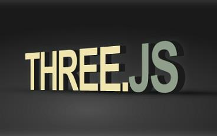

WebGL and the WebGL logo are trademarks of the Khronos Group Inc.
TeeChart for Javascript renders charts in 3D mode using WebGL and the Three.js library.
Current status of WebGL browser support: Can I use WebGL ?
Examples:
Basic minimal example
Extended example
Geo Maps in 3D
Surface 3D XYZ
Steps to create a 3D chart:
Include Three.js scripts:
<script src="three.min.js" type="text/javascript"></script>
<script src="helvetiker_regular.typeface.js"<>/script>
Include TeeChart scripts:
<script src="teechart.js" type="text/javascript"></script>
<script src="teechart-3d.js" type="text/javascript"></script>
Create a Tee.Three context, charts and series:
// Create 3D WebGL context:
var three = new Tee.Three("canvas1");
// Create Chart:
var Chart1 = new Tee.Chart(three);
// Add Bar series to Chart:
Chart1.addSeries(new Tee.Bar([5,3,2,7,1]));
Add the following code:
// Test for valid WebGL context:
if (three.isEnabled()) {
Chart1.draw();
animate();
}
else
{
// Show message to user (tell WebGL is not available in this browser) :
// (Note: This requires adding the Detector.js script, see below).
Detector.addGetWebGLMessage();
// Disable WebGL and use HTML5 2D Canvas instead:
three.setEnabled(false, Chart1);
}
// Loop:
function animate() {
three.update();
requestAnimationFrame( animate );
}
At page body, add an HTML canvas element:
<canvas id="canvas1" width=800 height=500></canvas>
Optional scripts:
To detect if browser supports WebGL:
<script src="Detector.js" type="text/javascript"></script>
To enable mouse drag rotation and wheel zoom:
<script src="TrackballControls.js"></script>